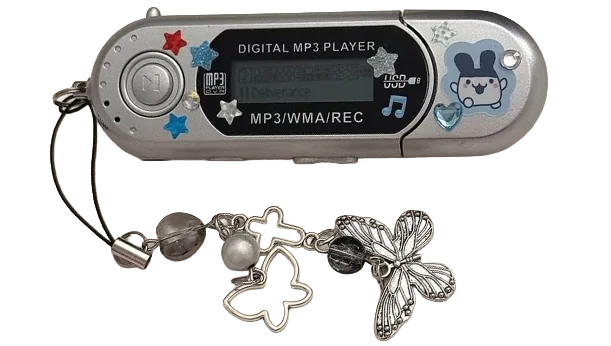

> nota_adjunta.txt

~/Cada capítulo es una sala. Elige por dónde seguir.
Pistas encontradas: 0/0
[ Sistema ] Capítulo en construcción · el contenido puede cambiar
> nota_adjunta.txt

~/Guardados en este navegador. Almacenamiento local.
[ Sistema ]
¡Las cosas buenas deben guardarse para el final! Elige un fragmento para leerlo.
Cargando...
Toca o pulsa cualquier tecla para continuar